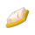

Guide des métiers Chasseur et Alchimiste
Ressource
Pour récupérer une ressource il suffit juste de cliquer dessus et d'avoir le niveau nécessaire. Pour monter le niveau de métier il est nécessaire de récupérer des ressources de son niveau et de craft des items car chaque ressource récupérée ou chaque items créé donne de l'expérience dans le métier associé
Dans Dofus, pour le métier de alchimiste, il y a 6 ressources et minimum une est déblocable tout les 20 niveaux de alchimiste tandis qu'il y a 11 ressources pour le métiers de chasseur et qu'une nouvelle est obtenable tout les 10 niveaux de métier
| Nom | Image | Niveau Requis |
| Ortie |  |
1 |
| Sauge | 20 | |
| Trèfle à 5 Feuilles | 40 | |
| Menthe Sauvage | 60 | |
| Orchidée Freyesque | 80 | |
| Edelweiss | 100 | |
| Viande Intangible | 1 | |
| Viande Hachée |  |
10 |
| Viande Faisandée | 20 | |
| Viande Frelatée | 30 | |
| Viande Minérale |  | 40 |
| Viande Tendre | 50 | |
| Viande Avariée | 60 | |
| Viande Ladre | 70 | |
| Viande Sanguinolente | 80 | |
| Viande Rassie | 90 | |
| Viande Exsudative | 100 |
Craft
Un craft, c'est à dire une combinaison d'items, rapporte de l'expérience dans le métier. Plus le niveau du métier est haut, plus il demande d'expérience et plus les crafts de bas niveau lui en donnent moins.
Voici quelque exemple de craft possible :